4. Random Number Generation¶
In order to sample probability distributions, one must be able to produce random
numbers. The standard technique to do this is to generate numbers on the
interval  from a deterministic sequence that has properties that
make it appear to be random, e.g. being uniformly distributed and not exhibiting
correlation between successive terms. Since the numbers produced this way are
not truly “random” in a strict sense, they are typically referred to as
pseudorandom numbers, and the techniques used to generate them are pseudorandom
number generators (PRNGs). Numbers sampled on the unit interval can then be
transformed for the purpose of sampling other continuous or discrete probability
distributions.
from a deterministic sequence that has properties that
make it appear to be random, e.g. being uniformly distributed and not exhibiting
correlation between successive terms. Since the numbers produced this way are
not truly “random” in a strict sense, they are typically referred to as
pseudorandom numbers, and the techniques used to generate them are pseudorandom
number generators (PRNGs). Numbers sampled on the unit interval can then be
transformed for the purpose of sampling other continuous or discrete probability
distributions.
4.1. Linear Congruential Generators¶
There are a great number of algorithms for generating random numbers. One of the simplest and commonly used algorithms is called a linear congruential generator. We start with a random number seed 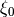 and a sequence of random numbers can then be generated using the following recurrence relation:
(1)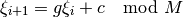
where 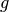, 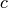, and  are constants. The choice of these
constants will have a profound effect on the quality and performance of the
generator, so they should not be chosen arbitrarily. As Donald Knuth stated in
his seminal work The Art of Computer Programming, “random numbers should not
be generated with a method chosen at random. Some theory should be used.”
Typically, is chosen to be a power of two as this enables 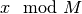 to be performed using the bitwise AND operator with a bit mask. The
constants for the linear congruential generator used by default in OpenMC are
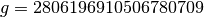, 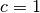, and 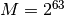 (see
[LEcuyer]).
are constants. The choice of these
constants will have a profound effect on the quality and performance of the
generator, so they should not be chosen arbitrarily. As Donald Knuth stated in
his seminal work The Art of Computer Programming, “random numbers should not
be generated with a method chosen at random. Some theory should be used.”
Typically, is chosen to be a power of two as this enables 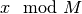 to be performed using the bitwise AND operator with a bit mask. The
constants for the linear congruential generator used by default in OpenMC are
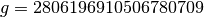, 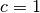, and 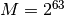 (see
[LEcuyer]).
4.1.1. Skip-ahead Capability¶
One of the important capabilities for a random number generator is to be able to
skip ahead in the sequence of random numbers. Without this capability, it would
be very difficult to maintain reproducibility in a parallel calculation. If we
want to skip ahead  random numbers and is large, the cost of
sampling random numbers to get to that position may be prohibitively
expensive. Fortunately, algorithms have been developed that allow us to skip
ahead in 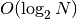 operations instead of 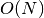. One algorithm
to do so is described in a paper by Brown. This algorithm relies on the following
relationship:
random numbers and is large, the cost of
sampling random numbers to get to that position may be prohibitively
expensive. Fortunately, algorithms have been developed that allow us to skip
ahead in 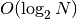 operations instead of 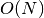. One algorithm
to do so is described in a paper by Brown. This algorithm relies on the following
relationship:
(2)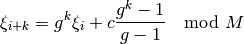
Note that (2) has the same general form as eqref{eq:lcg}, so the idea is to determine the new multiplicative and additive constants in operations.